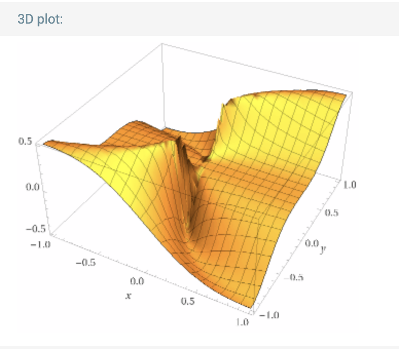

Una bola abierta en $\mathbb{R}^n$, de radio $r>0$ y centrada en $p_0\in \mathbb{R}^n$, es el conjunto
$$
B_r(p_0)=\{ p \in \mathbb{R}^n : \|p-p_0\| < r \}.
$$
Una bola abierta perforada se define como la bola abierta sin el centro es decir
$$
\hat{B}_r(p_0)=\{ p\in \mathbb{R}^n: 0 < \| p-p_0\| < r \}
$$
Definición
Sea $f$ una función (escalar o vectorial) definida en una bola perforada alrededor de $p_0$.
Cosidera la recta $l$, que pasa por $p_0$ con parametrización $p_0+tu$, $t\in \mathbb{R}$.
Decimos que
$f$ tiene límite, cuando \(p\) tiende a \(p_0\) sobre la recta $l$, si el siguiente límite existe
$$
\lim_{t\to 0} f(p_0+tu).
$$
Ejemplo
Considera la función dada por
$$
f(x,y)=
\left\{
\begin{array}{cc}
\frac{xy^3}{x^2+y^6} & (x,y)\ne(0,0), \\
0 & (x,y)=(0,0).
\end{array}
\right.
$$

Sea \(l\) cualquier recta que pasa por el origen. Vamos a probar
que el límite de \(f(x,y)\), cuando \((x,y)\) tiende a \((0,0)\) a lo
largo de \(l\) es cero.
Caso 1: \(l\) es el eje \(y\). En este caso parametrizamos
\(l\) como: \(t(1,0)\), con \(t\in \mathbb{R}\). Entonces
\[
\lim_{t\to 0} f(t(1,0))=\lim_{t\to 0} f(t,0)=\lim_{t\to 0} \frac{t(0^3)}{t^2+0^6}=0.
\]
Caso 2: \(l\) es la recta por el origen con pendiente \(m\). En
este caso podemos parametrizar \(l\) como: \(t(1,m)\), con \(t\in \mathbb{R}\). Entonces
\begin{eqnarray*}
\lim_{t\to 0} f(t(1,m))&=&\lim_{t\to 0} f(t,mt) \\
&=& \lim_{t\to 0}\frac{t(mt)^3}{t^2+(mt)^6}\\
&=&\lim_{t\to 0}\frac{m^3t^4}{t^2(1+m^6t^4)} \\
&=& \lim_{t\to 0}\frac{m^3t^2}{1+m^6t^4}=0
\end{eqnarray*}
Definición
Sea $f$ una función (escalar o vectorial) definida en una bola perforada alrededor de $p_0$. Decimos que
$$
\lim_{p\to p_0} f(p)=L
$$
si, para toda $\varepsilon >0$ existe $\delta >0$ tal que:
$$ 0< \|p-p_0\| <\delta \Rightarrow \|f(p)-L\| <\varepsilon$$
Ejemplo
Considera la función escalar dada por: $f(x,y)=\frac{xy}{\sqrt{x^2+y^2}}$, para $(x,y)\ne (0,0)$.
Entonces \(\lim_{(x,y)\to (0,0)} f(x,y)=0\).
Primero aplicamos la desigualdad aritmético geométrica al par
\(x^2, y^2\) para obtener
\[
\sqrt{x^2y^2}\leq \frac{x^2+y^2}{2}
\]
lo cual podemos re-escribir como
\[
|xy|\leq \frac{\|(x,y)\|^2}{2}
\]
De la desigualdad anterior llegamos que, para \(0< \|(x,y)\| \):
\[
|f(x,y)|=\frac{|xy|}{\sqrt{x^2+y^2}} \leq \frac{1}{2} \frac{\|(x,y)\|^2}{\|(x,y)\|}=\frac{1}{2}\|(x,y)\|.
\]
Vamos usar la definición \(\varepsilon-\delta\) para probar el límite. Primero
hacemos estimaciones para encontrar la \(\delta\) y después lo escribimos de manera formal.
Estimaciones.
El objetivo es \(|f(x,y)|<\varepsilon \) siempre y cuando \(\|(x,y)\| < \delta \). En vez de
\(|f(x,y)|<\varepsilon \) es más fácil pedir \(\frac{1}{2}\|(x,y)\| < \epsilon\)
(por la desigualdad anterior). Despejando de ésta
última la norma llegamos \(\|(x,y)\|< 2\varepsilon\). Finalmente tomamos \(\delta=2\varepsilon\).
Escritura formal.
Dada \(\varepsilon >0\) proponemos
\(\delta= 2\varepsilon\). Tomamos el punto \((x,y)\) en la bola perforada centrada en cero y de radio
\(\delta\), es decir \(0< \| (x,y)\| < \delta\). Debemos de probar que
\(|f(x,y)-0|=|f(x,y)|< \varepsilon\).
Para ésto último tenemos que por la desigualdad anterior
\begin{eqnarray*}
|f(x,y)|\leq \frac{1}{2}\|(x,y)\|
\end{eqnarray*}
y usando que el punto \((x,y)\) satisface \(0<\|(x,y)\|< \delta=2\varepsilon \), llegamos
\begin{eqnarray*}
|f(x,y)|&\leq & \frac{1}{2}\|(x,y)\| \\
&< & \frac{1}{2}\delta \\
&=&\frac{1}{2} 2 \varepsilon= \varepsilon.
\end{eqnarray*}
Conclusión
\[
\lim_{(x,y)\to (0,0)}f(x,y)=0.
\]
No-Ejemplo
Considera la función dada por
$$
f(x,y)=
\left\{
\begin{array}{cc}
\frac{xy^3}{x^2+y^6} & (x,y)\ne(0,0), \\
0 & (x,y)=(0,0).
\end{array}
\right.
$$
El Ejemplo 4.3 muestra que el límite de \(f(x,y)\)
cuando \((x,y)\to (0,0)\) a lo largo de cualquier recta que pasa
por el origen es cero. Ahora vamos a ver que el limite \(\lim_{(x,y)\to (0,0)}f(x,y)\ne 0\).
Vamos a suponer que \(\lim_{(x,y)\to (0,0)}f(x,y)=0\) y llegar a una contradicción.
Para \(\varepsilon=\frac{1}{2}\) existe \(\delta > 0\) tal que
\begin{equation}\label{EqnAux:NoEjemploLimite}
0< \| (x,y)\| < \delta \Rightarrow |f(x,y)|< \frac{1}{2}
\end{equation}
Ahora tomamos \((x,y)=(\frac{1}{n^3},\frac{1}{n})\) con \(n\in \mathbb{N}\)
suficientemente grande tal que \(\|(x,y)\|=\sqrt{\frac{1}{n^2}+\frac{1}{n^6}}< \delta\). Entonces
\begin{eqnarray*}
f\left( \frac{1}{n^3}, \frac{1}{n} \right)&=&\frac{\frac{1}{n^3}(\frac{1}{n})^3}{(\frac{1}{n^3})^2+(\frac{1}{n})^6}\\
&=& \frac{\frac{1}{n^6}}{\frac{1}{n^6}+\frac{1}{n^6}} \\
&=&\frac{1}{2}
\end{eqnarray*}
Sean \(f,g\) funciones definidas en la misma bola perforada centrada en
\(p_0\): \(f,g:\hat{B}_r(p_0)\to \mathbb{R}^n\). Supongamos que los siguientes límites existen
\[
\lim_{p\to p_0} f(p)=L, \, \lim_{p\to p_0} g(p)=M
\]
\(L,M\in \mathbb{R}^n\).
Entonces
\[
\lim_{p\to p_0} (f+g)(p)=L+M
\]
Para todo escalar \(\alpha \in \mathbb{R}\)
\[
\lim_{p\to p_0}\alpha f(p)=\alpha L
\]
Si \(f\) y \(g\) toman valores escalares, es decir \(f,g:\hat{B}_r(p_0)\to \mathbb{R}\),
con \(L,M\in \mathbb{R}\), entonces
\[
\lim_{p\to p_0}(fg)(p)=LM
\]
Si \(f\) y \(g\) toman valores escalareses, es decir \(f,g:\hat{B}_r(p_0)\to \mathbb{R}\),
con \(L,M\in \mathbb{R}\) y \(M\ne 0\)
entonces
\[
\lim_{p\to p_0}(f/g)(p)=L/M
\]
Proposición
Sea \(F:\hat{B}_r(\mathbf{p}_0) \to \mathbb{R}^m \) una función. Escribimos las funciones
coordenadas de \(\mathbf{F}\) como \(\mathbf{F}=(f_1,\dots, f_m)\).
Entonces
\[
\lim_{\mathbf{p}\to \mathbf{p}_0}F(\mathbf{p})=\mathbf{L}
\]
si y sólo si
\[
\lim_{\mathbf{p}\to \mathbf{p}_0}f_i(\mathbf{p})=l_i, \, \textrm{para todo \(i=1,\dots,m\)}
\]
donde escribimos \(\mathbf{L}=(l_1,\dots. l_m)\).
Es decir, el límite existe si y sólo existe coordenada a coordenada.
Por el Ejercicio 1.35
tenemos que para todo \(\mathbf{q}=(q_1,\dots, q_m)\in \mathbf{R}^m\)
se cumple
\begin{eqnarray*}
\|\mathbf{q}\|& \leq & \sum_{i=1}^m |q_i| \\
|q_i| & \leq & \|\mathbf{q}\|, i=1,\dots, m.
\end{eqnarray*}
Aplicando lo anterior al punto \(\mathbf{q}=\mathbf{F}(\mathbf{p})-\mathbf{L}\) obtenemos
\begin{eqnarray*}
\|\mathbf{F}(\mathbf{p})-\mathbf{L}\|& \leq & \sum_{i=1}^m |f_i(\mathbf{p})-l_i| \\
|f_i(\mathbf{p})-l_i| & \leq & \|\mathbf{F}(\mathbf{p})-\mathbf{L}\|, i=1,\dots, m.
\end{eqnarray*}
Usaremos estas desigualdades más adelante.
Para probar la proposición usaremos la definición \(\varepsilon-\delta\) del límite.
\(\Rightarrow ]\) Supongamos \(\lim_{\mathbf{p}\to \mathbf{p}_0}\mathbf{F}(\mathbf{p})=\mathbf{L}\) y
sea \(\varepsilon>0\). Entonces existe \(\delta >0\) tal que si el punto
\(\mathbf{p}\) satisface \(\|p-p_0\| < \delta \) entonces \(\|\mathbf{F}(\mathbf{p})-\mathbf{L} \|< \varepsilon\).
Se sigue que para toda \(i=1,\dots, m\)
\[
|f_i(\mathbf{p})-l_i|\leq \|\mathbf{F}(\mathbf{p})-\mathbf{L}\|< \varepsilon
\]
siempre y cuando \(\|\mathbf{p}-\mathbf{p}_0\| < \delta \). De lo anterior concluimos
\(\lim_{\mathbf{p}\to \mathbf{p}_0}f_i(\mathbf{p})=\mathbf{p}_0\).
\(\Leftarrow ]\) Supongamos que para todo \(i=1,\dots, m\) se cumple
\[
\lim_{\mathbf{p}\to \mathbf{p}_0 }f_i(\mathbf{p})=l_i
\]
y sea \(\varepsilon >0\).
Para cada una de las funciones \(f_i\) existe un \(\delta_i > 0\) tal que si
\(\|\mathbf{p} - \mathbf{p}_0\| < \delta_i\) entonces
\(|f_i(\mathbf{p})-l_i| <\varepsilon/m\).
Tomamos \(\delta = \min_{i=1,\dots, m}\{ \delta_i\}\). Nota que \(\delta >0\) y si
\(\|\mathbf{p}-\mathbf{p}_0\| < \delta \) entonces
\(\| \mathbf{p}-\mathbf{p}_0\|< \delta_i\) para toda \(i=1,\dots, m\) y por lo tanto
\(
|f_i(\mathbf{p})-l_i|< \frac{\varepsilon}{m}
\)
para toda \(i=1,\dots, m\).
Se sigue que si \(\| \mathbf{p}-\mathbf{p}_0\| < \delta \) entonces
\[
\|\mathbf{F}(\mathbf{p})-\mathbf{L}\| \leq \sum_{i=1}^m |f_i(\mathbf{p})-l_i| < \sum_{i=1}^m \frac{\varepsilon}{m}=\varepsilon.
\]
De lo anterior concluimos que \(\lim_{\mathbf{p} \to \mathbf{p}_0}\mathbf{F}(\mathbf{p})=\mathbf{L}\).
Definición
Sea \((\mathbf{p}_n)_{n=1}^\infty\) una sucesión de puntos en \(\mathbf{R}^n\). Decimos
que el límite de la sucesión existe sii existe un punto \(\mathbf{L}\in \mathbf{R}^n\) que
satisface: para toda \(\varepsilon >0\) existe un número natural \(N\) tal que:
\[
\|\mathbf{p}_n -\mathbf{L}\| < \varepsilon, \, \textrm{para toda
\(n\geq N\).}
\]
Lo anterior se denota como \(\lim_{n\to \infty}\mathbf{p}_n=\mathbf{L}\). También
se dice que la sucesión \((\mathbf{p}_n)_{n=1}^\infty\) es convergente.
Por ejemplo para la sucesión de puntos \(\mathbf{p}_n=(\frac{2}{n}, \frac{3}{n})\)
se tienen \(\lim_{n\to \infty }\mathbf{p}_n=(0,0)\) pues: dada \(\varepsilon >0\)
para que la condición
\(\|\mathbf{p}_n\| < \varepsilon\) se satisfaga se necesita
\[
\sqrt{\frac{4}{n^2}+\frac{9}{n^2}}=\frac{1}{n}\sqrt{4^2+3^2}=\frac{25}{n} < \varepsilon
\]
lo cual es equivalente a \(n \geq \frac{25}{\varepsilon}\). Asi para que se cumpla
la definición de límite se propone \(N\) cualquier natural que
cumpla \( N > \frac{25}{\varepsilon} \).
La siguiente proposición ayuda a reducir límites de sucesiones en
\(\mathbb{R}^n\) a suceciones en \(\mathbb{R}\) (las de cálculo 1).
Lema
Si \((\mathbf{p}_n)_{n=1}^\infty\) es una sucesión convergente entonces existe
\(M>0\) tal que \(\|\mathbf{p}_n\| \leq M\), para toda \(n\in \mathbf{N}\).
Para \(\varepsilon=1\) existe un número natural \(N\) tal que
\(\|\mathbf{p}_n - \mathbf{L} \|< 1\), para toda \(n\geq N\). Por la
otra desigualdad del triángulo se tiene
\begin{eqnarray*}
|\|\mathbf{p}_n\|-\|\mathbf{L}\||< 1 \Rightarrow \|\mathbf{p}_n\| < 1+\|\mathbf{L}\|.
\end{eqnarray*}
Si tomamos \(M=1+\|\mathbf{L}\|\) tenemos que
\(\|\mathbf{p}_n\|\leq M\) para toda \(n\geq N\), pero nos faltan considerar los
puntos \(\mathbf{p}_1,\dots, \mathbf{p}_{N-1}\), asi que tomamos
\[
M=1+\|\mathbf{L}\|+ M'
\]
donde
\[
M'=\max\{\|\mathbf{p}_1,\cdots, \| \mathbf{p}_{N-1}\| \}.
\]
Con esta \(M\) aseguramos que \(\|\mathbf{p}_n\| \leq M\) para toda \(n\).
Proposición
Notación: dado un vector \(\mathbf{p}\in \mathbf{R}^d\) por
\(\mathbf{p}[i]\) denotamos su entrada \(i\), \(i=1,\dots, d\).
Sea \((\mathbf{p}_n)_{n=1}^\infty\) una sucesión de puntos en \(\mathbf{R}^d\).
\(\lim_{n\to \infty}\mathbf{p}_n=\mathbf{L}\) si y sólo si,
para toda entrada \(i=1,\dots, d\), \(\lim_{n\to \infty} \mathbf{p}_n[i]=\mathbf{L}[i]\).
Comencemos por suponer que $\lim_{n \to \infty} p_n = L$. Recordemos que para cada $i \in
\{1,\ldots,d\}$ se tiene que $|p_n[i] - L[i]| \leq \|p - L\|$. Sea $\epsilon > 0$, por
hipótesis se tiene que existe $N \in \mathbb{N}$ tal que si $n \geq N$ entonces
$\|p_n - L\|<\epsilon$. Por lo tanto, usando dicha $N$ se tiene que si $n \geq N$
entonces
\begin{equation*}
|p_n[i] - L[i]| \leq \|p_n - L\| < \epsilon,
\end{equation*}
para cada $i \in \{1,\ldots,d\}$, por lo que para cada entrada $\lim_{n \to \infty}p_n[i]=L[i]$.
Supongamos ahora que para cada entradad $i=1,\ldots,d$ $\lim_{n \to \infty}p_n[i] = L[i]$, entonces
para $\epsilon/d >0$ existen $N_1,\ldots,N_d$ tales que si $n \geq N_i$ entonces $|p_n[i] - L[i]| <
\epsilon$. Recordemos ahora que
\begin{equation*}
\|p_n - L\| \leq \sum_{i=1}^d |p_n[i] - L[i]|.
\end{equation*}
Si definimos $N = \max \{N_1,\ldots,N_d\}\geq N_i$ entonces se tiene que para $n \geq N$
\begin{equation*}
\|p_n - L\| \leq \sum_{i=1}^d |p_n[i] - L[i]| < \sum_{i=1}^d \epsilon/d = \epsilon,
\end{equation*}
con lo que se concluye que
\begin{equation*}
\lim_{n \to \infty}p_n = L.
\end{equation*}
Teorema
Teorema de Bolzano-Weirestrass
Sea $(\mathbf{p}_n)_{n=1}^\infty$ una sucesión de puntos en \(\mathbb{R}^d\) y supón que existe
\(M>0\) tal que \(\|\mathbf{p}_n\| \leq M\) para toda \(n\). Entonces existe una
subsucesión $(\mathbf{p}_{n_s})_{s \geq 1}$ y un punto \(\mathbf{L}\) tal que
$$
\lim_{s \to \infty}\mathbf{p}_{n_k}=\mathbf{L}.
$$
La demostración es por inducción en la dimensión del espacio, en la notación de arriba, \(d\).
Supongamos que el resultado en cierto hasta dimensión \(d\) y probémoslo para \(d+1\).
Sea \((\mathbf{p}_n)_{n=1}^\infty\) una sucesión de puntos de \(\mathbb{R}^{d+1}\)
tal que \(\|\mathbf{p}_n\|\leq M\), para toda \(n\in \mathbb{N}\).
Del punto \(\mathbf{p}_n\) tomamos las primeras \(d\) corrdenadas para formar el
vector \(\tilde{\mathbf{p}}_n\in \mathbf{R}^{d}\), es decir
\[
\tilde{\mathbf{p}}_n=(\mathbf{p}_n[1], \dots, \mathbf{p}_n[d])
\]
donde \(\mathbf{p}[i]\) denota la coordenada del punto \(\mathbf{p}\in \mathbf{R}^{d+1}\).
Una comparación directa se prueba que
\[
\mathbf{p}_n[1]^2+\cdots + \mathbf{p}_n[d]^2 \leq
\mathbf{p}_n[1]^2+\cdots + \mathbf{p}_n[d]^2+\mathbf{p}_n[d+1]^2
\]
Scando raíz cuadrada en ambos lados obtenemos que \(\|\tilde{\mathbf{p}}_n\| \leq \|\mathbf{p}_n\|\)
por lo tanto \(\|\tilde{\mathbf{p}}_n\| \leq M\) para toda \(n\). Por la hipótesis de inducción
existe una subsucesión \((n_k)_{k=1}^\infty\) y un punto \(\mathbf{L}'\in \mathbf{R}^d\)
tal que
\[
\lim_{k\to \infty}\tilde{\mathbf{p}}_{n_k}=\mathbf{L}'.
\]
Ahora volvemos a dimensión 1 considerando la subsucesión
\((\mathbf{p}_{n_k}[d+1])_{k=1}^\infty\). Por el Ejercicio
\[
|\mathbf{p}_{n_k}[d+1]|\leq \|\mathbf{p_{n_k}}\| \leq M, \, \textrm{para toda \(k\)}
\]
por lo tanto podemos aplicar Bolzano-Weirestrass en dimensión 1
a la sucesión \((\tilde{\mathbf{p}}_{n_{k}}[d+1])_{s=1}^\infty\) para
encontrar un \(l_{d+1}\in \mathbb{R}\) y una subsucesión
\((\mathbf{p}_{n_{k_s}}[d+1])_{s=1}^\infty\) tal que
\begin{equation}\label{Eqn:Aux1BW}
\lim_{s\to \infty} \mathbf{p}_{n_{k_s}}[d+1]= l_{d+1}
\end{equation}
Ya que las subsucesiones de sucesiones convergentes son convergentes
también tenemos que
\begin{equation}\label{Eqn:Aux2BW}
\lim_{s\to \infty} \mathbf{p}_{n_{k_s}}= \mathbf{L}'
\end{equation}
Definamos \(\mathbf{L}=(\mathbf{L}'[1], \dots, \mathbf{L}'[d], l_{d+1})\).
De las ecuaciones \eqref{Eqn:Aux1BW} y \eqref{Eqn:Aux2BW}
obtenemos que
\[
\lim_{s\to \infty} \mathbf{p}_{n_{k_s}}[i]= \mathbf{L}[i], \, \textrm{para toda \(i=1,\dots, d, d+1\)}
\]
y por la Proposición 5.25 concluimos que
\[
\lim_{s\to \infty}\mathbf{p}_{n_{k_s}}=\mathbf{L}.
\]
Proposición
Sea \(g:\hat{B}_r(q_0)\to \mathbb{R}^n\) con \(\lim_{q\to q_0}g(q)=p_0\) y sea
\(f:\hat{B}_s(p_0) \to \mathbb{R}^m\) con \(\lim_{p\to p_0} f(p)=L\).
Supongamos que \(g(\hat{B}_r(q_0)) \subseteq \hat{B}_s(p_0)\).
Entonces \(\lim_{q\to q_0} f(g(q))=L\).
Sea \(\varepsilon >0\). Debemos probar que existe una \(\delta >0\) tal que:
\[
0< \|q-q_0\|< \delta \Rightarrow \| f(g(q))-L\| < \varepsilon.
\]
Por hipótesis, \(\lim_{p\to p_0} f(p)=L\) por lo que para \(\varepsilon >0\)
existe \(\eta >0\) tal que
\begin{equation}\label{EqnAux:ComposicionLimites}
0< \| p- p_0\| < \eta \Rightarrow \| f(p)-L\| < \varepsilon.
\end{equation}
También por hipótesis sabemos que \(\lim_{q\to q_0} g(q)=q_0\) por lo
que para \(\eta >0\) existe \(\delta >0\) tal que
\begin{equation}\label{EqnAux:ComposicionLimites2}
0< \| q-q_0\|< \delta \Rightarrow \|g(q)-p_0\| < \eta
\end{equation}
Ahora, si \(0< \|q-q_0\|< \delta \)
entonces, por \(\eqref{EqnAux:ComposicionLimites2}\) se cumple \(\|g(q)-p_0\|<\eta\) y
usando la hipótesis \(g(\hat{B}_r(q_0)) \subseteq \hat{B}_s(p_0) \)
podemos tomar \(p=g(q)\) en \(\eqref{EqnAux:ComposicionLimites}\)
para llegar a
\[
\|f(g(q))-L\|< \varepsilon.
\]
Definición
Sea \(f\) una función definida en una bola perforada centrada en \(p_0\)
y sea \(\gamma\) una trayectoria parametrizada tal que \(\lim_{t\to t_0}\gamma(t)=p_0\).
Se define el límite de \(f\) a lo largo de \(\gamma\), cuando \(p\to p_0\),
como el límite
\[
\lim_{t\to t_0} f(\gamma(t))
\]
siempre y cuando dicho límite exista.
Nota: ésta definición generaliza la definición de límite a lo largo de una recta.
Teorema
Sea \(f\) una función definida en una bola perforada centrada en \(p_0\). Entonces
\[
\lim_{p\to p_0} f(p)=L
\]
si y sólo sí, para toda trayectoria parametrizada \(\gamma\) con traza
que no pase por \(p_0\) y con \(\lim_{t \to t_0} \gamma(t)=p_0\), se cumple
\[
\lim_{t\to t_0} f(\gamma(t))=L.
\]
\(\Rightarrow ]\) Esta dirección sale directamente
de aplicar la Proposición 4.13
\(\Leftarrow ]\) Lo haremos por contrapositiva. Supongamos que
\(\lim_{p\to p_0}f(p) \ne L\). Negando la definición del límite se obtiene que
existe una \(\varepsilon_0 >0\) la cual satisface que para toda \(\delta >0\)
existe un punto "cercano a \(p_0\)", es decir \(\|p_\delta-p_0\| < \delta \)
pero \(|f(p_\delta)-L| \geq \varepsilon_0\).
Haciendo que \(\delta\) tome los
valores \(1,1/2,\dots, 1/n,\dots \), obtenemos una sucesión de puntos
\((p_n)_{n=1}^\infty\) tales que \(\|p_n-p_0\| < 1/n\) y \(|f(p_n)-L|\geq \varepsilon_0\).
Definamos la trayectoria \(\gamma\) tal que inicia en \(p_1\) y va uniendo los puntos
\(p_n\) mediante un segemento de recta. En concreto podemos definir \(\gamma:[0,1]\to \mathbb{R}^n\)
por
\[
\gamma:\left[\frac{1}{n+1},\frac{1}{n}\right] \to \mathbb{R}^n
\]
dada por \(\gamma(t)=n(n+1)(p_{n+1}-p_n)\left(\frac{1}{n}-t \right)+ p_n\) y
\(\gamma(0)=p_0\).
Vamos a probar que \(\lim_{t\to 0}\gamma(t)=p_0\).
En efecto, dada \(\varepsilon >0\) tomamos \(N\) tal que \(\frac{1}{N} < \frac{\varepsilon}{3}\).
Si \(0< t < \frac{1}{N} \) encontramos el \(n> N\) para el cual
\(t\in [1/(n+1), 1/n]\) entonces
\begin{eqnarray*}
\| \gamma(t)-p_0\|&=& \left\|n(n+1)(p_{n+1}-p_n)\left(\frac{1}{n}-t \right)+ p_n - p_0 \right\| \\
&\leq & n(n+1)\left| \frac{1}{n}-t \right|\|p_{n+1}-p_n\|+ \|p_n-p_0\| \\
&\leq & n(n+1)\left| \frac{1}{n}-\frac{1}{n+1} \right|\|p_{n+1}-p_n\|+\|p_n-p_0\|\\
&\leq &\|p_{n+1}-p_n\|+\|p_n-p_0\|\\
&\leq & \|p_{n+1}-p_0\| +\|p_0-p_n\| + \|p_n-p_0\| \\
&\leq & \frac{1}{n+1}+\frac{1}{n}+\frac{1}{n} \\
& \leq & \frac{3}{N} < 3 \frac{\varepsilon}{3}=\varepsilon
\end{eqnarray*}
Para concluir notamos que
\[
|f(\gamma(1/n))-L| = |f(p_n)-L| \geq \varepsilon_0
\]
para toda \(n \geq 0\)
por lo que \(\lim_{t\to 0} f(\gamma(t))\ne L\).
Límites de curvas parametrizadas
La Proposición 4.8 ayuda a entender
completemente los límites de las curvas parametrizadas.
Sea \(\gamma: I \to \mathbb{R}^n\) una curva parametrizada, donde \(I\subseteq \mathbb{R}\)
es un intervalo arbitrario (puede ser de la forma \((a,b)\), \([a,b]\), etc.). Si escribimos
a \(\gamma\) en términos de sus funciones coordenadas tenemos
\(\gamma=(\gamma_1,\dots, \gamma_n)\), donde
\[
\gamma_i: I \to \mathbb{R}, i=1,\dots, n,
\]
y es importante notar que las funciones \(\gamma_i\) son de funciones de una variable que toman
valores reales. En otras palabras son el tipo de funciones que se ven en cálculo 1 y 2. Además
por la Proposición 4.8 la existencia de un límite de la
forma \(\lim_{t\to t_0}\gamma(t)\) es equivalente a la existencia de los límites
\[
\lim_{t\to t_0} \gamma_i(t), i=1,\dots, n,
\]
los cuales caen dentro del área de cálculo 1 y 2.
Por ejemplo \(\lim_{t\to t_0} (\cos(t),\sen(t))=(\cos(t_0),\sen(t_0))\). Asi pues
en cierto sentido los límites de las curvas parametrizadas son "sencillos". Por esta
simplicidad va a ser posible definir curvas diferenciables inmediatamente.
Nota: si la curva parametrizada tiene codominio \(\mathbb{R}^2\) o \(\mathbb{R}^3\)
las funciones coordenadas suelen denotarse:
\[
\gamma(t)=(x(t),y(t)) \quad \textrm{ó} \quad \gamma(t)=(x(t),y(t),z(t)).
\]
Definición
Sea \(\gamma: (a,b)\to \mathbb{R}^n\) una curva parametrizada con funciones
coordenadas
\[\gamma=(\gamma_1,\dots, \gamma_n).\]
Dado \(t_0\in (a,b)\) definimos la derivada de \(\gamma\) en \(t_0\) como
\[
\lim_{t\to t_0} \frac{1}{t-t_0}(\gamma(t)-\gamma(t_0))
\]
siempre que dicho límite exista. Denotamos el límite anterior como
\(\gamma'(t_0)\). Nota que \(\gamma'(t_0)\) es un vector en \(\mathbb{R}^n\). También decimos que \(\gamma\)
es diferenciable o tiene derivada en \(t_0\).
Al vector \(\gamma'(t_0)\) también se le llama el vector tangente a \(\gamma\) o el vector
velocidad en \(t_0\).
Si asi vez, las funciones coordenadas de \(\gamma'\) son diferenciables en \(t_0\)
podemos volver a tomar la derivada y obtener la segunda derivada en \(t_0\), denotada
\(\gamma''(t_0)\), también conocida como la aceleración de \(\gamma\) en \(t_0\).
Observación: aplicando la Proposición 4.8
directamente resulta que \(\gamma\) es diferenciable en \(t_0\) si y sólo si
cada función coordenada \(\gamma_i\) es diferenciable en \(t_0\) y además, de existir la derivada
se tiene que:
\[
\gamma'(t_0)=(\gamma_1'(t_0),\dots, \gamma_n'(t_0)).
\]
De manera similar, si cada \(\gamma_i'\) es diferenciable en \(t_0\):
\[
\gamma''(t_0)=(\gamma_1''(t_0),\dots, \gamma_n''(t_0)).
\]
Ejemplo
Segunda ley de Newton en órbitas circulares
La segunda ley de Newton dice que:
\[\textrm{Fuerza}=\textrm{masa}\times \textrm{aceleración}.\]
Queremos analizar la fuerza de gravedad ejercida por un objeto colocado
en el origen sobre un objeto que se mueve de manera circular alrededor
del origen.
Si representamos la fuerza por una función vectorial, la fuerza en el punto
\(v=(x,y)\) está dada por:
\[
F(v)=-\frac{GmM}{\|v\|^3} v,
\]
\(G= 6.674\times 10^{-11} N⋅m2/kg2\) y \(M,m\)
son las masas del objeto en el origen y el objeto orbitandolo, respectivamente.
Ya que la órbita es circular la podemos representar con la
curva parametrizada, \(\gamma(t)=r(\cos(\omega t), \sen(\omega t))\). Entonces tenemos:
Por la segund ley de Newton, \(F(\gamma(t))=ma(t)\) lo que se traduce:
\[
-\frac{GmM}{\| \gamma \|^3}\gamma(t)=-m \omega^2 \gamma(t)
\]
Tomando normas en ambos lados obtenemos $\frac{GM}{r^3}=\omega^2$.
Por otro lado el periodo del movimiento es $T=\frac{2\pi}{\omega}$. Entonces
$$
\frac{GM}{r^3}=\frac{4\pi^2}{T^2}
$$
lo cual dice que cuadrado del periodo es proporcional al cubo del radio.
Definición
Dada una función de dos variables \(f(x,y)\), definida en una bola perforada de
\((x_0,y_0)\), un límite iterado es una expresión de la forma
\[
\lim_{x\to x_0}(\lim_{y\to y_0}f(x,y)), \lim_{y\to y_0}(\lim_{x\to x_0} f(x,y))
\]
y se calcula de "adentro hacia afuera" siempre y cuando cada uno de los límites existan.
Para la función
\[
f(x,y)=\frac{x^2}{x^2+y^2}
\]
el cálculo \(\lim_{x\to 0}(\lim_{y\to 0} f(x,y))\) es el siguiente:
Paso 1. Se toma un punto \((x,y)\ne (0,0)\), se toma como
\(x\) fija (constante) y se toma el límite sobre \(y\)
\[
\lim_{y\to 0}f(x,y)=\lim_{y\to 0}\frac{x^2}{x^2+y^2}
\]
Tenemos dos casos: \(x\ne 0\), \(x=0\). Nota que \(y\ne 0\) pues estamos
tomando el límite cuando \(y\to 0\).
Caso \(x\ne 0\):
\[
\lim_{y\to 0}\frac{x^2}{x^2+y^2}=\frac{x^2}{x^2}=1.
\]
Caso \(x=0\):
\[
\lim_{y\to 0}\frac{x^2}{x^2+y^2}=\lim_{y\to 0}\frac{0}{y^2}=0
\]
nota: \(0/y^2=0\) pues \(y^2>0\) y el cociente anterior está bien definida.
En resumen \(\lim_{y\to 0}f(x,y)=g(x)\) donde
\(g(x)=1\) si \(x\ne 0\) y \(g(x)=0\) si \(x=0\).
En el primer paso encontramos \(\lim_{y\to 0}f(x,y)=g(x)\) por lo tanto el límite
iterado se reduce a
\[
\lim_{x\to 0}(\lim_{y\to 0}f(x,y))=\lim_{x\to 0} g(x)=1
\]
nota que la última igualdad se vales pues cuando \(x\to 0\) suponemos que
\(x\ne 0\) por lo que \(g(x)=1\).
Paso 1. Para \((x,y)\ne (0,0)\) tomamos \(y\) constante y calculamos
\[
\lim_{x\to 0} \frac{x^2}{x^2+y^2}
\]
Caso 1: \(y\ne 0\).
\[
\lim_{x\to 0} \frac{x^2}{x^2+y^2}=\frac{0}{0+y^2}=0.
\]
Caso 2: \(y=0\).
\[
\lim_{x\to 0} \frac{x^2}{x^2+y^2}=\lim_{x\to 0} \frac{x^2}{x^2}=1
\]
nota que como tomamos \(x\to 0\) se tiene que \(x\ne 0\) y se puede cancelar.
Por lo tanto \(\lim_{x\to 0} f(x,y)=h(y)\) donde
\(h(y)=0\) si \(y\ne 0\) y \(h(y)=1\) si \(y=0\).
Paso 2.
Usando el paso 1
\[
\lim_{y\to 0}(\lim_{x\to 0})= \lim_{y\to 0} h(y)=0.
\]
Por lo tanto
\[
\lim_{y\to 0}\left( \lim_{x\to 0}\frac{x^2}{x^2+y^2} \right)=0.
\]
Notas.
Los ejemplos anteriores muestra que puede pasar:
\[
\lim_{x\to x_0}(\lim_{y\to y_0} f(x,y))\ne \lim_{y \to y_0 }(\lim_{x\to x_0}f(x,y))
\]
Para funciones de 3 o más variables se definen los límites iterados de manera similar. Por
ejemplo para funciones de 3 variables se pueden considerar límites iterados de la forma
\[
\lim_{x\to x_0}(\lim_{y\to y_0}(\lim_{z\to z_0}f(x,y,z)))
\]
junto con todas las posibles ordenaciones (seis casos).
Ejercicio
Considera la función $f(x,y)=\frac{xy}{x^2+y^2}$, para \((x,y)\ne (0,0)\).
Demuestra que, para cualquier recta $l$ que pasa por el origen,
el límite $f(x,y)$, cuando $(x,y)\to (0,0)$, existe a lo largo de $l$.
Prueba que el límite \(\lim_{(x,y)\to (0,0)}f(x,y)\)
no existe.
Ejercicio
Demuestra que:
$\frac{|xy|}{|x|+|y|} \leq |x|$.
Usa el inciso anterior para probar $\lim_{(x,y)\to (0,0)}\frac{xy}{|x|+|y|}=0$.
Ejercicio
Sea $f$ una función, que toma valores reales, definida en una bola perforada alrededor de $p_0$.
Asume que existe una función $\phi$, definida en un intervalo centrado en cero,
que toma valores reales, que satisface
$\lim_{t\to 0^+}\phi(t)=0$.
existe un número $L$ que satisface $|f(p)-L| \leq \phi(\|p-p_0\|)$, para $p$ en una bola
perforada alrededor de $p_0$.
Demuestra que $\lim_{p\to p_0}f(p)=L$.
Ejercicio
Sea $f$ una función que toma valores reales y que está definida en una bola perforada alrededor de $p_0$.
Demuestra que si $\lim_{p \to p_0}f(p)$ existe y es igual a \(L\) entonces, para toda recta $l$ que pasa por $p_0$,
$f$ tiene límite, cuando $p\to p_0$, a lo largo de $l$ y el límite también es \(L\).
Ejercicio
Demuestra que $\lim_{(x,y)\to (0,0)} \frac{\sen(x^2+y^2)}{x^2+y^2}$ existe.
Sugerencia: $\lim_{t\to 0}\frac{\sen(t)}{t}=1$.
Encuentra las $\alpha >0$ para las cuales el límite $\lim_{(x,y) \to (0,0)}
\frac{\sen(x^2+y^2)}{\alpha x^2+y^2}$, existe.
Sugerencia: calcula los límites a lo largo de rectas que pasan por el origen.
Sea $f:\mathbb{R}^n \to \mathbb{R}$ una función lineal. Demuestra que, para todo $p_0\in \mathbb{R}^n$
$$\lim_{p\to p_0} f(p)=f(p_0)$$
Sugerencia: por el ejercicio, sabemos que exsite $q\in \mathbb{R}^n$ tal que $f(p)=\langle p, q \rangle$, para todo
$p$. Después usa la desigualdad de Cacuchy-Schwartz para probar: $|f(p)-f(p_0)| \leq \|q\| \| p-p_0\|$.
Ejercicio
Usa coordenadas polares para calcular los siguientes límites
Sea \(A\) una matriz de
\(n\times n\) y \(p_0\in \mathbb{R}^n\). Demuestra que, $\lim_{p\to p_0}Ap=Ap_0$.
Ejercicio
Sea $F:\mathbb{R}^n \to \mathbb{R}^m$ una función lineal. Supongamos que
$$
\lim_{p\to 0} \frac{\|F(p)\|}{\|p\|}=0.
$$
Demuestra que $F$ es la función constante cero.
Sugerencia: considera límtes a lo largo de rectas por origen de la forma $p=te_i$, donde $t\in \mathbb{R}$
y $e_i$ es vector canónico.
Ejercicio
Sean dos sucesiones \((\mathbf{p}_n)_{n=1}^\infty, (\mathbf{q}_n)_{n=1}^\infty\) en
\(\mathbf{R}^d\) con límites
\[
\lim_{n\to \infty}\mathbf{p}_n=\mathbf{L},\,\lim_{n\to \infty}\mathbf{q}_n=\mathbf{L}'.
\]
Si los puntos están en \(\mathbf{R}^3\) prueba
\[
\lim_{n\to \infty} \mathbf{p}_n \times \mathbf{q}_n = \mathbf{L}\times \mathbf{L}'.
\]
Sugerencia: primero prueba
\begin{eqnarray*}
\|\mathbf{p}_n \times \mathbf{q}_n-\mathbf{L}\times \mathbf{L}' \| &\leq &
\| (\mathbf{p}_n-\mathbf{L})\times \mathbf{q}_n\| \\
&+& \|\mathbf{L}\times (\mathbf{q}_n-\mathbf{L}') \|
\end{eqnarray*}
y luego aplica el Ejercicio 2.19
Queremos acotar \(|\langle \mathbf{p}_n, \mathbf{q}_n \rangle - \langle \mathbf{L}, \mathbf{L}'\rangle|\)
por arriba con expresiones que involucren \(\|\mathbf{p}_n-\mathbf{L}\|\) y
\(\|\mathbf{q}_n-\mathbf{L}'\|\).
Continuando con la acotación por arriba, aplicamos la desigualdad de Cauchy-Schwartz para obtener
\begin{eqnarray*}
|\langle \mathbf{p}_n-\mathbf{L}, \mathbf{q}_n\rangle |+ |\langle \mathbf{L}, \mathbf{q}_n-\mathbf{L}'\rangle |
&\leq & \| \mathbf{p}_n-\mathbf{L}\|\|\mathbf{q}_n\| + \|\mathbf{L}\| \|\mathbf{p}_n-\mathbf{L}' \|
\end{eqnarray*}
Por el Lema 5.23 existe \(M>0\) tal que
\(\|\mathbf{q}_n\|\leq M\) para toda \(n\). Por lo tanto de la
desigualdad anterior se sigue que
\begin{eqnarray}\label{Eqn:Aux2ProdInterContinuo}
|\langle \mathbf{p}_n-\mathbf{L}, \mathbf{q}_n\rangle |+ |\langle \mathbf{L}, \mathbf{q}_n-\mathbf{L}'\rangle |
&\leq & \| \mathbf{p}_n-\mathbf{L}\|M + \|\mathbf{L}\| \|\mathbf{p}_n-\mathbf{L}' \|
\end{eqnarray}
De las ecuaciones \eqref{Eqn:Aux1ProdInterContinuo} y \eqref{Eqn:Aux2ProdInterContinuo} llegamos a
\begin{equation}\label{Eqn:Aux3ProdInterContinuo}
|\langle \mathbf{p}_n, \mathbf{q}_n\rangle - \langle \mathbf{L}, \mathbf{L}'\rangle |
\leq \| \mathbf{p}_n-\mathbf{L}\|M + \|\mathbf{L}\| \|\mathbf{p}_n-\mathbf{L}' \|
\end{equation}
Dada \(\varepsilon >0\), usamos \(\lim_{n\to \infty}\mathbf{p}_n=\mathbf{L}\)
para agurar la existencia de un \(N_1\in \mathbf{N}\) tal que
\[
\| \mathbf{p}_n- \mathbf{L}\|< \frac{\varepsilon}{2M}, \, \textrm{para toda \(n\geq N_1\)}
\]
y usamos \(\lim_{n\to \infty}\mathbf{q}_n=\mathbf{L}'\)
para obtener un \(N_2\in \mathbf{N}\) tal que
\[
\| \mathbf{q}_n- \mathbf{L}'\|< \frac{\varepsilon}{2(|\mathbf{L}\|+1)}, \textrm{para toda \(n\geq N_1\)}
\]
Nota: se usa \(\|\mathbf{L}\|+1\) para tomar en consideración el caso \(\mathbf{L}=0\).
Si tomamos \(N=\max\{ N_1,N_2\}\) y \(n\geq N\) entonces de las desigualdades anteriores obtenemos que
en \eqref{Eqn:Aux3ProdInterContinuo} podemos acotar:
\begin{eqnarray*}
|\langle \mathbf{p}_n, \mathbf{q}_n\rangle - \langle \mathbf{L}, \mathbf{L}'\rangle |
&\leq & \| \mathbf{p}_n-\mathbf{L}\|M + \|\mathbf{L}\| \|\mathbf{p}_n-\mathbf{L}' \| \\
& < & \frac{\varepsilon}{2M}M + \|\mathbf{L}\| \frac{\varepsilon}{2(\|\mathbf{L}\|+1)}\\
& < & \varepsilon.
\end{eqnarray*}
Ejercicio
Considera la función $f(x,y)=\frac{x-y}{x+y}$, para $(x,y)$ con $x+y \ne 0$.
Demuestra que el límite $\lim_{(x,y)\to (0,0)}f(x,y)$ no existe.